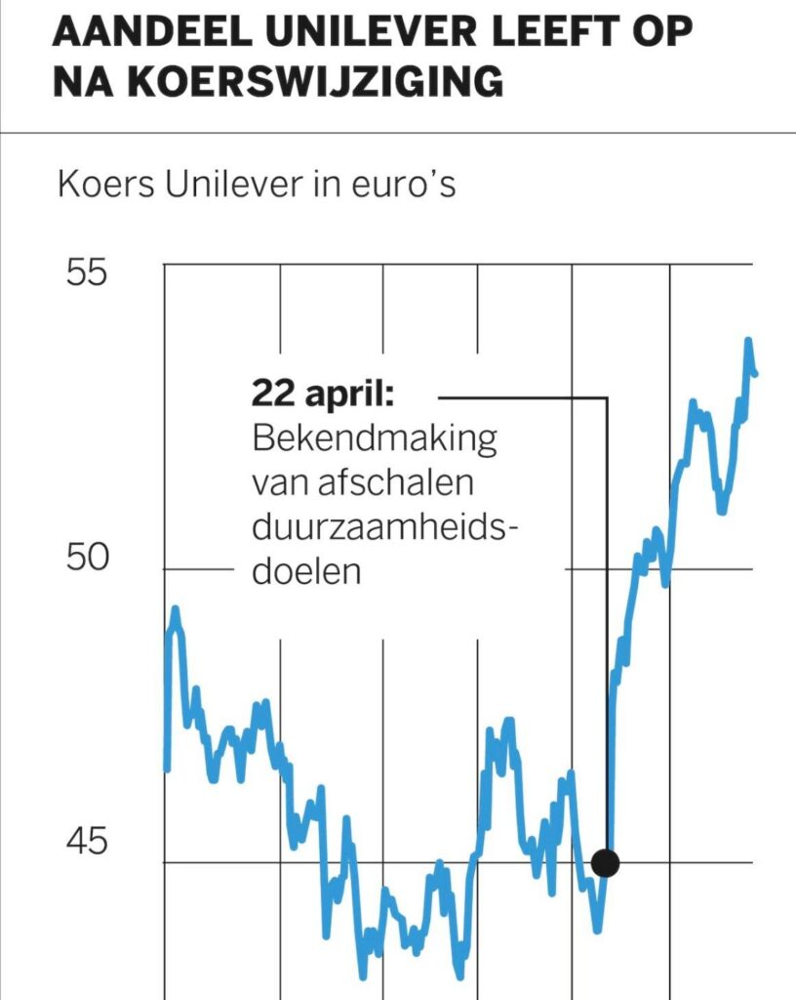
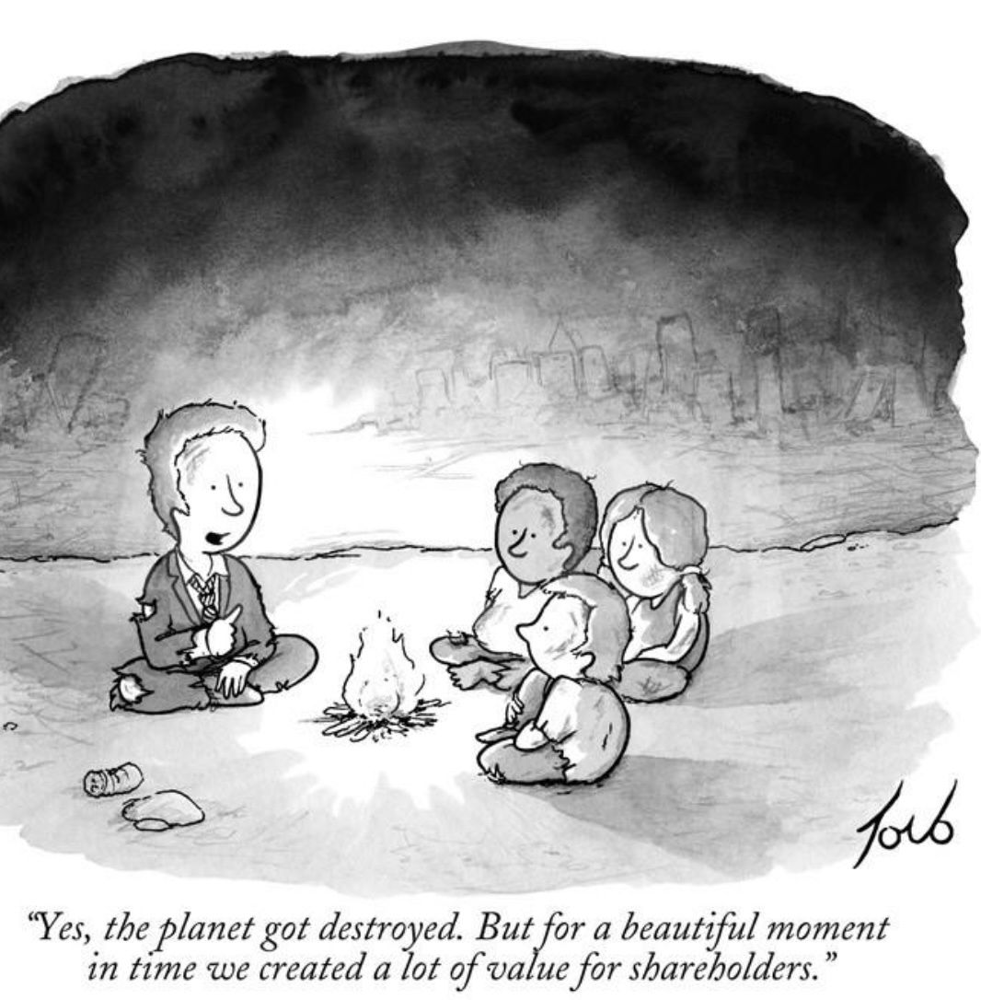

Vacatures · 0 openstaand · 1 aandeelhouder tevreden
Niet werken bij
Niet werken bij Unilever
Wie wil er nou werken voor een bedrijf dat winst belangrijker vindt dan een leefbare planeet?
22 aprilUnilever maakt bekend duurzaamheidsdoelen af te schalen.
↑ koersDe koers veert op, zie de grafiek hieronder.
↓ ambitieDe duurzaamheidsdoelen gaan de andere kant op.
Het bewijs
Twee plaatjes zeggen meer dan een duurzaamheidsrapport van tweehonderd pagina's.

Bron: grafiek uit de Volkskrant (zie bronnen). Context: Bloomberg, Just Food.

Bron: © Tom Toro / The New Yorker. Achtergrond: interview met Tom Toro.
Bronnen
- Bloomberg, "ESG: Unilever scales back sustainability goals" (19 april 2024).
- Just Food, "Unilever dials down sustainability targets for more focused green strategy".
- Planet Tracker, "Unilever: A Pivotal Moment".
- Climate Museum, interview met cartoonist Tom Toro.
- de Volkskrant, "Bij Unilever zouden groen en groei samengaan, nu gaat groei toch voor". Bron van de grafiek "Aandeel Unilever leeft op na koerswijziging".
Openstaande vacatures
Je zou het bijna overwegen. Bijna.
Manager Duurzaamheid
Taak: de doelen in de nieuwsbrief houden, niet in de planning.
Senior Aandeelhouderswaarde
Taak: zorgen dat de grafiek omhoog gaat. Hoe, maakt niet uit.
Greenwashing Specialist
Taak: een blad boompje op de verpakking. Ervaring met woorden als "bewust" is een pre.
Wat dan wel?
Werk voor een organisatie die haar duurzaamheidsdoelen niet inlevert zodra de beurs even trekt.
- Kijk of de doelen gehaald zijn, niet of ze gehaald worden.
- Vraag bij het sollicitatiegesprek wat er met de ambities is gebeurd na het laatste kwartaalcijfer.
- Kies een werkgever waar je over tien jaar nog trots op kunt zijn.